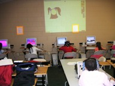
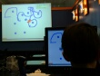
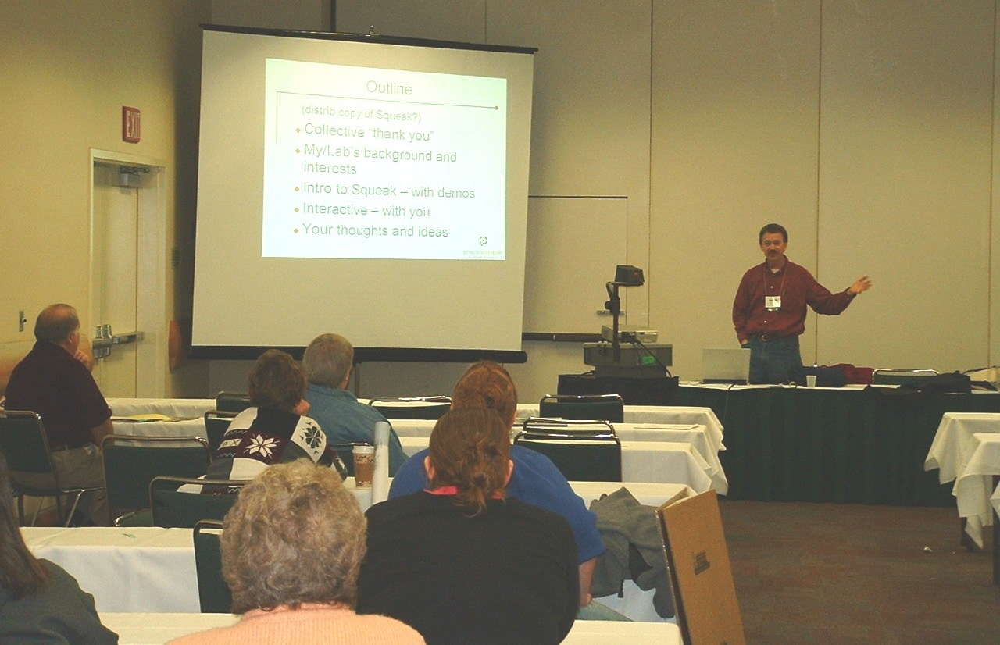
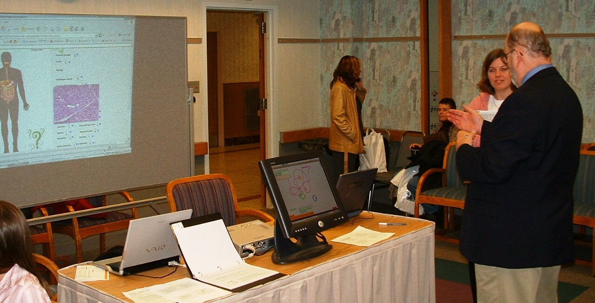
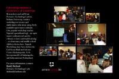
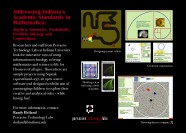
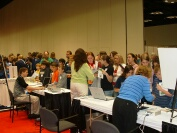
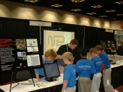

One open source software tool that I recommend for enhancing science and math learning for younger students (elementary-middle school) is called Squeak (another similar tool is Scratch). Together with Katie Browning, Director of the Girl Scout Math and Science Center (Indianapolis), I delivered a poster presentation about Squeak for the ITAP Teaching and Learning with Technology conference at Purdue in Feb 2005. I have also presented several workshops at various after-school centers (below).


Workshops at the Indy Girl Scout Math & Science Center
In spite of the snowy, blustery weather, we had a packed house and LOTS of fun at our first (March '05) Girl Scout workshop learning Squeak. For the main project, each pair of girls created their own "critter" and then programmed the critter to have particular behaviors. The primary behavior/goal was to have a critter successfully follow a trail of "food". (NOTE: No critters were harmed in the making of this workshop). Our lab followed up with other workshops, also held at the Math & Science Center in Nov, Dec '05; Jan, Feb, Mar, Oct '06; Jan, Mar '07.


Presentation at Squeakfest '05
I presented a mathematical modeling education project aimed at middle/high school students at the annual Squeakland conference in 2005.
- download | play in browser(*-Note1) - Squeak project for mathematical modeling in nature (~5M)
You can hear presentations of Alan Kay (as well as read various presentations).
Workshops at Girls Incorporated® of Indianapolis
 The SDA Lab began volunteering for once-a-week after-school computer workshops in the Girls Inc.® She's Techknow! program in fall 2005 and continuing in 2006.
Supercomputing '05 Education Program
I created a module for the K-12 Education Program at the Supercomputing 2005 conference. The module was entitled Introduction to Distributed Computing. It consisted of a Powerpoint presentation, a more extensive Flash presentation (with audio), and included a hands-on simulation using Squeak.
- DistComp-SC05.pdf (19M).
- download | play in browser(*-Note1) - 1st Squeak project in this module
- download | play in browser(*-Note1) - 2nd Squeak project in this module
Workshops at kidscommons
 The SDA Lab began volunteering for Saturday morning computer workshops at kidscommons (Columbus IN) in 2006.
HASTI 2006
 The SDA Lab presented a talk and demonstration at the 2006 HASTI conference.
TLT 2006
 The SDA Lab and Katie Browning once again presented a poster session at the Purdue ITaP Teaching and Learning with Technology conference.
ISEF 2006
    The SDA Lab presented a two-day interactive exhibit at the Intel International Science and Engineering Fair, May 11-12.
Life Science Education
{kind=link}
{kind=link}
- Medical imaging: segmentation, registration, 3-D reconstruction
- Genes and proteins
- Health education
*-Note1: requires have the Squeak plugin installed